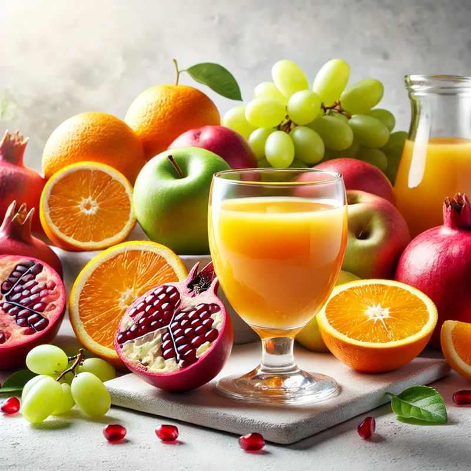

Meyve Suyu Konsantreleri Hakkında
Meyve suyu konsantreleri, taze meyvelerden elde edilen suyun uzaklaştırılmasıyla yoğunlaştırılan, besin değeri yüksek ve doğal ürünlerdir. Bu yöntem, meyve sularının daha uzun süre dayanmasını sağlarken taşınmasını ve saklanmasını da kolaylaştırır. UPEK GIDA, yılların tecrübesi ve üstün kalite anlayışıyla, meyve suyu konsantrelerinin üretiminde sektörün lider isimlerinden biridir. Doğallığı ve katkısızlığı ön planda tutarak, tüketicilere en sağlıklı ürünleri sunmayı hedeflemektedir.
1. Üretim Süreci: Doğallık ve Kalite Odaklı UPEK GIDA’da, meyve suyu konsantreleri üretiminde her aşama titizlikle yürütülür. Kaliteli üretim süreci, ürünün doğallığını ve besin değerlerini korur: • Seçkin Meyveler: Üretimde kullanılan meyveler, özenle seçilir ve olgunluklarıyla tat, renk ve vitamin açısından en yüksek değeri sunar. • Hijyenik Yıkama ve Presleme: Taze meyveler, modern tesislerde hijyenik koşullarda yıkanır ve preslenerek meyve suyu elde edilir. • Vakum Altında Yoğunlaştırma: Meyve suyu, düşük sıcaklıklarda vakum altında yoğunlaştırılır. Bu yöntem, meyvenin doğal besin değerlerini, aromasını ve rengini korur. • Kalite Kontrol: UPEK GIDA, uluslararası kalite standartlarına uygun olarak her aşamada kontroller gerçekleştirir. Ürünler, sağlıklı ve güvenilir koşullarda ambalajlanarak tüketiciye ulaştırılır.
2. UPEK GIDA Farkı: Sağlıklı ve Doğal Ürünler UPEK GIDA, üretimde doğal ve katkısız ürünleri temel alarak tüketici memnuniyetini ön planda tutar. • Sağlık ve Besin Değerleri: Meyve suyu konsantrelerimiz, doğal vitamin ve mineralleri içerir. Özellikle C vitamini, antioksidanlar ve lif açısından zengin olan bu ürünler, sağlıklı yaşamı destekler. • Hijyen ve Güvenilirlik: Modern üretim tesislerimizde, yüksek hijyen standartları sağlanarak güvenli gıda üretimi garanti edilir. • Lezzet ve Tazelik: Meyvelerin doğal lezzeti ve tazeliği korunarak üretilen konsantreler, yoğun aroma ve tat sunar.
3. Kullanım Alanları: İçecek ve Gıda Sektöründe Vazgeçilmez Meyve suyu konsantreleri, gıda endüstrisinde geniş bir kullanım alanına sahiptir. • İçecek Üretimi: Meyve suyu, enerji içecekleri ve smoothie gibi ürünlerde temel bileşen olarak kullanılır. • Tatlılar ve Soslar: Reçeller, marmelatlar, dondurmalar, tatlı soslar ve pastacılık ürünlerinde doğal tatlandırıcı olarak tercih edilir. • Fonksiyonel Gıdalar: Besin değeri yüksek atıştırmalıklar ve takviye edici gıdaların üretiminde kullanılır.
Sağlığınız için doğadan gelen lezzeti seçin. UPEK GIDA kalitesiyle üretilen meyve suyu konsantreleriyle tanışın ve sağlıklı yaşamın keyfini çıkarın!
Üretim Aşamaları
- Meyve toplama ve yıkama
- Presleme ve meyve suyunun elde edilmesi
- Suyun uzaklaştırılması (konsantre edilmesi)
- Ambalajlama ve depolama
Doğal ve katkısız meyve suyu konsantrelerimiz, en kaliteli meyveler kullanılarak üretilmekte ve sağlıklı bir yaşamı desteklemektedir.